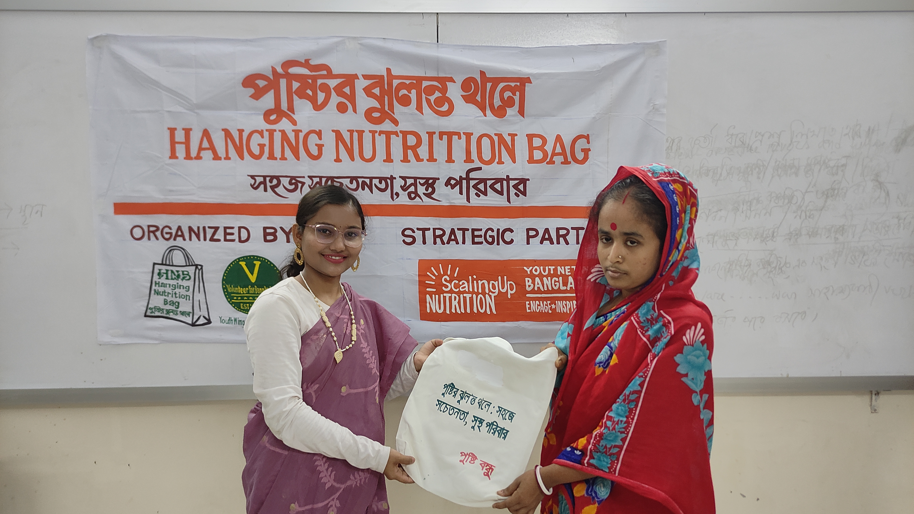
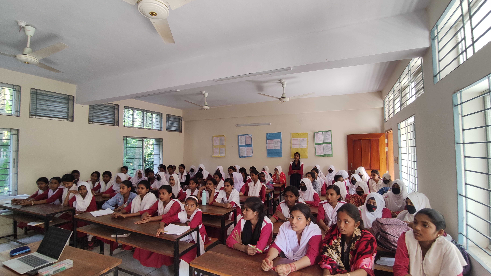

Field Moments
Capturing the smiles and spirits of PNF initiatives.





Capturing the smiles and spirits of PNF initiatives.


"The bag changed how I cook for my children. Now I follow the pictures every day."
Mother of 3, Bagerhat
"PNF didn't just give us food information — they gave our family dignity and knowledge."
Beneficiary Farmer
"I learned about nutrition and now I teach my younger siblings what to eat to stay healthy."
Youth Volunteer